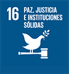

❮
❯


1 / 18
2 / 18
3 / 18
4 / 18
5 / 18
6 / 18
7 / 18
8 / 18
9 / 18
10 / 18
11 / 18
12 / 18
13 / 18
14 / 18
15 / 18
16 / 18

17 / 18
18 / 18
El objetivo 2 es crear un mundo libre de hambre para 2030. El problema global del hambre y la inseguridad
alimentaria ha mostrado un aumento alarmante desde 2015, una tendencia exacerbada por una combinación de
factores que incluyen la pandemia, los conflictos, el cambio climático y la profundización de las
desigualdades.
En 2022, aproximadamente 735 millones de personas (o el 9,2 % de la población mundial) se encontraban en
estado de hambre crónica, un aumento vertiginoso en comparación con 2019. Estos datos subrayan la gravedad
de la situación y revelan una crisis creciente.
Además, se estima que 2400 millones de personas se enfrentaron a inseguridad alimentaria de moderada a grave
alarmantes 391 millones de personas en comparación con 2019.
en 2022; lo que significa que carecen de acceso a una alimentación suficiente. Este número aumentó en unos
factores, exige atención inmediata y esfuerzos globales coordinados para aliviar este desafío humanitario
crítico.
El hambre y la malnutrición extremas siguen siendo un obstáculo para el desarrollo sostenible y crean una
trampa de la que las personas no pueden escapar fácilmente. El hambre y la malnutrición se traducen en
individuos menos productivos, más propensos a las enfermedades y, por tanto, a menudo imposibilitados para
ganar más y mejorar sus medios de subsistencia. 2000 millones de personas en el mundo no tienen acceso
habitual a alimentos seguros, nutritivos y suficientes. En 2022, 148 millones de niños sufrieron retraso en
el crecimiento y 45 millones de niños menores de 5 años sufrieron emaciación.
El persistente aumento del hambre y la inseguridad alimentaria, impulsado por una compleja interacción de
¿Cuántas personas pasan hambre?
Se prevé que más de 600 millones de personas en todo el mundo se enfrentarán al hambre en 2030, lo que pone de relieve el inmenso desafío
de alcanzar el objetivo de hambre cero.
Las personas que experimentan inseguridad alimentaria y moderada normalmente no pueden llevar una dieta sana y equilibrada de forma habitual
debido a limitaciones de ingresos u otros recursos.
¿Por qué hay tantas personas que pasan hambre?
Sorprendentemente, el mundo ha vuelto a niveles de hambre no vistos desde 2005, y los precios de los alimentos siguen siendo más altos en
más países que en el período 2015-2019. Junto con los conflictos, la crisis climática y el aumento del coste de la vida, la inseguridad civil
y la disminución de la producción de alimentos han contribuido a la escasez y los altos precios de los alimentos.
La inversión en el sector agrícola es fundamental para reducir el hambre y la pobreza, mejorar la seguridad alimentaria, crear empleo y
aumentar la resiliencia ante desastres y crisis.
¿Por qué debería importarme?
Todos queremos que nuestras familias tengan suficientes alimentos para consumir productos seguros y nutritivos.Un mundo sin hambre puede
tener un impacto positivo en nuestras economías, salud, educación, igualdad y desarrollo social.
Es una pieza clave para construir un futuro mejor para todos. Además, dado que el hambre limita el desarrollo humano, no podremos alcanzar
otros objetivos de desarrollo sostenible, como la educación, la salud y la igualdad de género.
¿Cómo podemos lograr el hambre cero?
La seguridad alimentaria requiere un enfoque pluridimensional: desde la protección social para salvaguardar alimentos inocuos y nutritivos,
especialmente para los niños, hasta la transformación de los sistemas alimentarios para lograr un mundo más inclusivo y sostenible.
Será necesario realizar inversiones en zonas rurales y urbanas y en protección social para que las personas más pobres tengan acceso a
los alimentos y puedan mejorar sus medios de subsistencia.
¿Qué podemos hacer para ayudar?
Puedes contribuir con cambios en tu propia vida (en casa, en el trabajo y en tu comunidad) apoyando a los agricultores o mercados locales
y eligiendo alimentos sostenibles, defendiendo una buena nutrición para todos y luchando contra el desperdicio de alimentos.
También puedes usar tu poder como consumidor y votante, exigiendo a las empresas y a los gobiernos que tomen las decisiones y los cambios
que harán realidad el hambre cero. Participa y únete a la conversación, ya sea en plataformas de redes sociales o en tus comunidades locales.